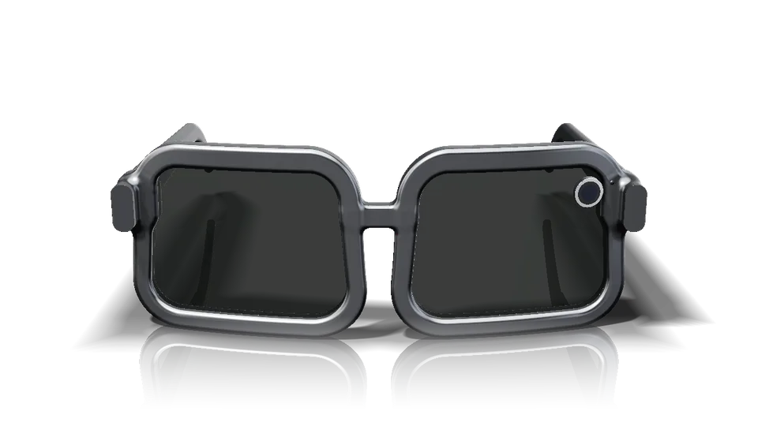

0:00Gravando... toque em Parar quando terminar
Entre na sua conta para conversar com a IA. Cada pessoa tem a sua.
Seu nome
Voz da IA
12 vozes humanas. Sem internet, usa a voz do celular.
Aparência
Conta
Cores das conversas
Círculo de cores com intensidade. Dica: segure o dedo em cima de um balão da conversa para mudar a cor dele.
Personalizar
Língua, cores dos balões, letra, voz, tom, velocidade e volume.
JJGlasses
Dica: você também pode pedir no chat, por exemplo "me lembra amanhã às 9h de ligar pro médico".

Arraste para girarToque no óculos ou aqui. Grava até você parar (máximo 5 min).
O que você falar pelo óculos vai para este chat.